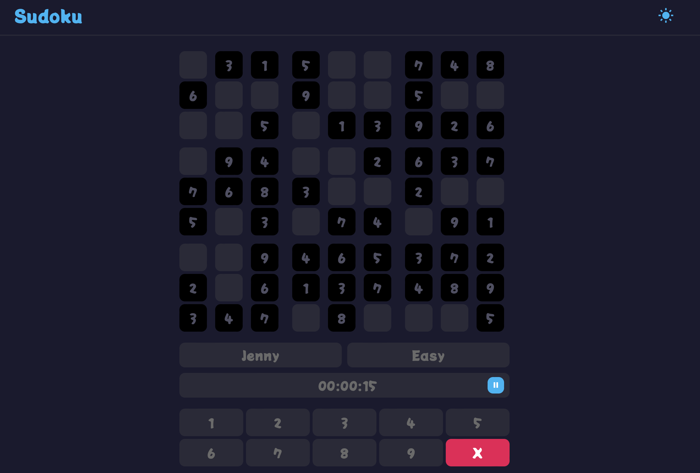

Chefbot is designed to be a personalized chatbot chef to help beginner cooks easily find recipes by providing all the necessary information, ranging from ingredients needed to the cook time it'll take. Using the idea of an AI chatbot as you would see when chatting with customer service, ChefBot aims to surf the Edamam API for recipes and output the following recipes according to user input. This is a passion of mine as someone who started cooking since I was 10 — I've always loved cooking for those around me and wanted to make it easier and just as enjoyable for others.
See project
- Edamam Recipe Search API
- Chatbot-style UI
- Cloudfare Worker Proxy
- HTML / CSS / JS / Node.js
As part of my full-stack class, I was inspired to recreate the Sudoku game but in a more fun and appealing way. It includes all the checks for basic rules, as well as additional features such as a light/dark mode. When designing this game, I thought about how I could change the styling of the traditional Sudoku you'd find on the New York Times, but make it more "kid-friendly." I realized that fun colors and interactive buttons in certain fonts/styles draw more of a younger audience.
See project
- Custom game logic
- Light / dark mode
- HTML / CSS / JS